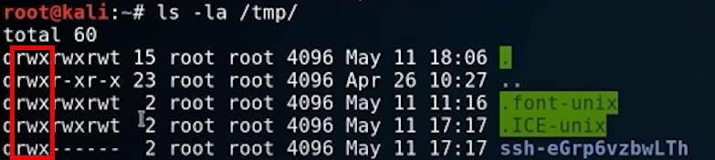

the tmp folder has full read write execute(rwx), so when we are doing a penetration testing, we trying to upload some sort of
exploit. we might actually upload it into the tmp folder because that is where we can execute those files! we also maybe want to find other
read write execute files, where we can modify them and give us root access to a system. so it's all about insecure configurations.
ls -la /tmp/

we can also create a scritp that is not going to execute until it has full access.
So do we change access?
tripple 7 gives you full access across the board
chmod 777 hello.txt
chmod +x hello.txt